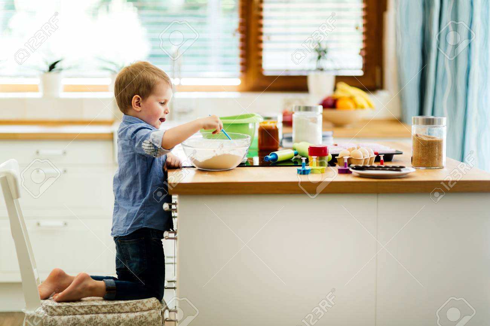
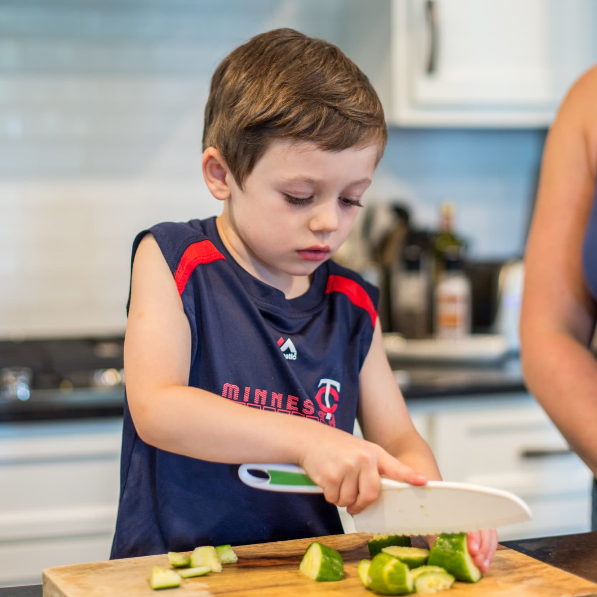
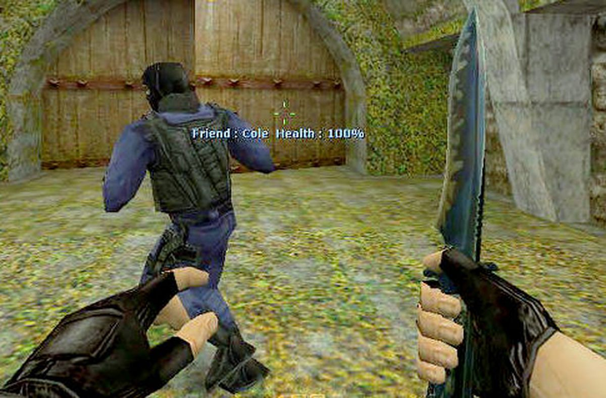

KỸ NĂNG NẤU ĂN
Có những bậc cha mẹ giữ con cái mình xa những vật sắc nhọn như dao, kéo kể cả khi chúng đã lớn nhưng cũng có những bậc cha mẹ lại khá tích cực trong việc dạy con trẻ sử dụng các vật dụng trên. Thực tế cho thấy, trẻ học cầm dao, sử dụng dao cũng giống như trẻ tập cầm bút và viết, chỉ cần cha mẹ chỉ dạy và trẻ cảm thấy thoải mái khi cầm dao cắt gọt rau, củ quả thì đó là khi trẻ có thể bắt đầu làm quen với việc bếp núc. Để đảm bảo an toàn cho trẻ và giúp trẻ sử dụng dao đúng cách, cha mẹ cần chú ý 6 điều dưới đây khi hướng dẫn trẻ. 1. Hãy kê ghế cho trẻ đứng vừa tầm Thông thường, kệ bếp được thiết kế để phù hợp với tất cả mọi người. Tuy nhiên, để kệ bếp phù hợp hơn với trẻ, cha mẹ nên đặt thêm một chiếc ghế nhỏ để trẻ đứng lên cho vừa tầm. Như vậy trẻ cũng dễ dàng nhìn thấy những gì chúng đang cắt.  2. Để trẻ cầm dao theo cách trẻ thấy thoải mái Một số người nghĩ rằng chỉ có một cách cầm dao duy nhất để thái hay cắt gọt nhưng thực tế có nhiều cách khác nhau, tùy theo cả văn hóa và khả năng của mỗi người.  3. Nắm chắc vật cần cắt Để tránh kiểu “tay nọ cắt tay kia” khi trẻ mới dùng dao, cha mẹ hãy dạy trẻ cầm hoặc giữ chắc chắn loại rau, củ, quả trẻ đang cắt. 4. Dùng cả hai tay để điều khiển dao Nghe có vẻ khó tưởng tượng nhưng đây là cách dùng dao mà nhiều đầu bếp chuyên nghiệp thường dùng. 5. Hãy tập cắt bằng dao đủ sắc Không ít người nghĩ rằng, dao sắc dễ gây “tai nạn” hơn khi trẻ sử dụng, tuy nhiên chính những con dao cùn mới có nhiều khả năng làm đứt tay trẻ do quá trình cắt khó khăn, tay phải xê dịch nhiều và dùng lực mạnh hơn. 6. Có thể tập cắt qua những trò chơi Nếu tất cả những điều trên không khiến bạn lung lay và vẫn tiếp tục ngăn cản trẻ tập tành thái cắt bằng dao trong nhà bếp thì bạn có thể thử cho trẻ làm quen bằng cách nhẹ nhàng hơn, đó là tập cắt qua những trò chơi.  Cũng khá là thú vị khi trẻ được học một khóa “cầm dao cơ bản” bắt đầu từ việc cầm dao nhựa và cắt vào những miếng đất nặn mềm mại, nhiều màu. Khi trẻ đã chơi trò cắt nhiều, trẻ quen tay và tự tin hơn, bạn có thể bắt đầu các bước tiếp theo trong việc dạy trẻ dùng dao an toàn. Đừng quá lo lắng vì trẻ hoàn toàn có thể làm được – chỉ cần người lớn sẵn sàng dành thời gian chỉ dạy cho trẻ. Chẳng phải những đầu bếp nhí cũng thường bắt đầu từ những lần dùng dao vụng về khi còn bé tí hay sao?!